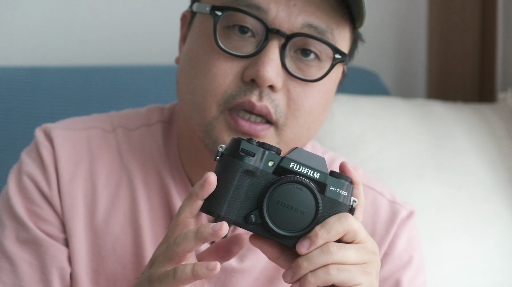

이번 포스팅에서는 후지필름 XT50 카메라에 대한 약 두 달 사용 후기를 전해드립니다. 작은 크기와 가벼운 무게는 물론, 초보자가 사용하기에 적합한 다양한 기능을 살펴보겠습니다. XT50이 왜 특별한 카메라인지 함께 알아볼까요?

후지필름 XT50 사용 후기
- 간편한 휴대성
- 후지필름 카메라 입문
- XT5와의 비교
후지필름 XT50은 사용하기 쉽고, 다른 모델인 XT5와 비교했을 때 더 작은 크기와 가벼운 무게를 자랑합니다.

가벼운 무게와 디자인
- 작고 가벼운 바디
- 최신 디자인
- 셔터음의 매력
XT50은 작고 가벼운 디자인으로 편리함을 제공하며, 셔터음이 특히 아름답습니다.

촬영의 편리함
- 출퇴근 시 부담 없음
- 가벼운 렌즈 추천
- 풍부한 촬영 경험
XT50을 사용하면서 매일 휴대하면서 다양한 촬영을 즐길 수 있었습니다.

편리한 조작성과 버튼 배치
- 조작이 적고 간편함
- 오토 레버 기능
- 사용자 친화적 디자인
XT50은 조작이 간편하고 버튼 배치가 잘 되어 있어 초보자도 쉽게 접근할 수 있습니다.

초보자들에게 적합한 카메라
- 조작법의 단순화
- 다양한 필름 시뮬레이션
- 접근성 좋은 기능들
후지필름 카메라는 초보자들이 사용하기 쉬운 조작법과 다양한 촬영 모드를 제공합니다.

단점과 개선점
- 작은 렌즈와의 조화 부족
- 배터리 수명 문제
- 조작의 불편함
XT50의 단점으로는 작은 렌즈와의 밸런스 문제나 배터리 수명이 짧은 점이 있습니다.

결론 및 추천
- 신품 및 중고 구매 용이
- 독특한 디자인
- 후지의 감성적 사진 경험
XT50은 후지필름의 감성을 갖춘 카메라로서, 특히 초보자에게 추천할만한 모델입니다.
Tags: #후지필름 #XT50 #카메라 #사진촬영 #편리한사용 #디자인 #초보자추천 #렌즈추천 #영화촬영 #사진작가공략